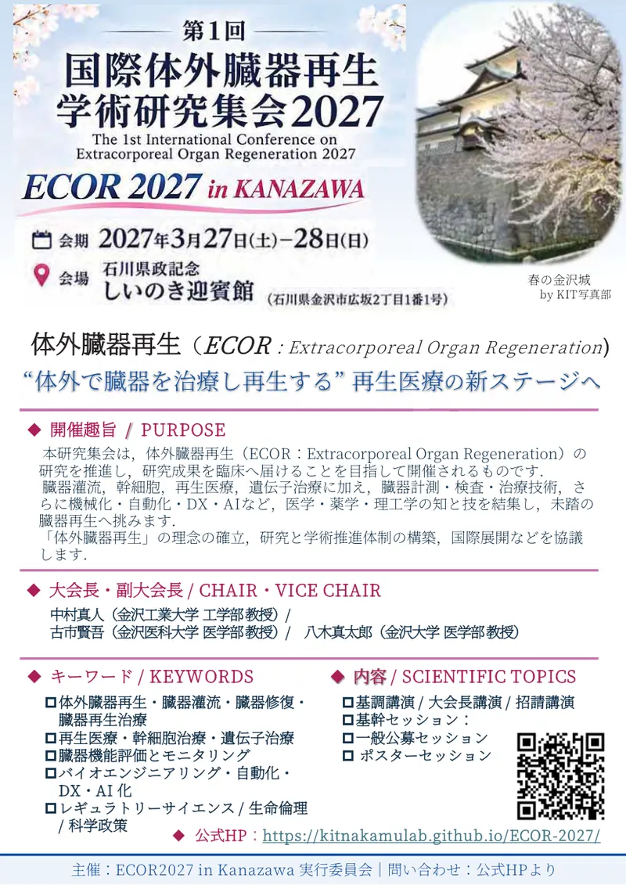
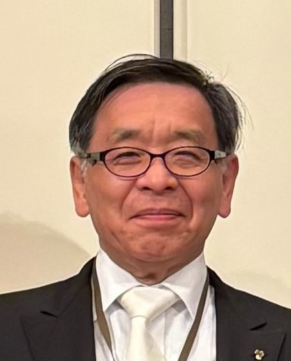
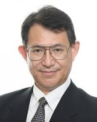
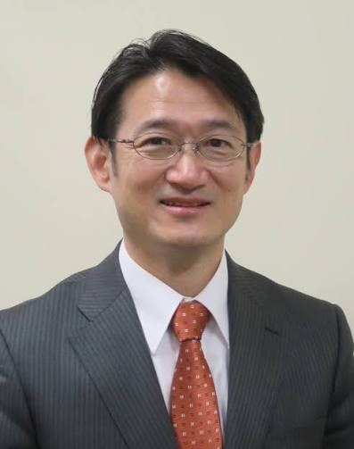

INAUGURAL CONFERENCE · KANAZAWA, JAPAN
第1回国際体外臓器再生学術集会2027
The 1st International Conference on Extracorporeal Organ Regeneration (ECOR)
ECOR2027 in Kanazawa
NEWS新着情報 / INFORMATION
Information 新着情報
ECOR 2027 公式ウェブサイトを公開しました。
01開催趣旨 / PURPOSE
体外で臓器を治療し、再生する 再生医療の新ステージへ
本研究集会は、体外臓器再生（ECOR：Extracorporeal Organ Regeneration）の研究を推進し、研究成果を臨床へ届けることを目指して開催されるものです。
臓器灌流、幹細胞、再生医療、遺伝子治療に加え、臓器の計測・検査・治療技術、さらに機械化・自動化・DX・AIなど、医学・薬学・理工学の知と技を結集し、未踏の臓器再生へ挑みます。
「体外臓器再生」の理念を確立し、具体的な研究と学術推進、国際展開を協議する予定です。
02内容 / SCIENTIFIC TOPICS
臓器再生に関する研究と学術推進、国際展開を協議します。
SCIENTIFIC PROGRAM
研究集会の内容
- 基調講演 / 大会長講演 / 招請講演
- 基幹セッション：
- 一般公募セッション
- ポスターセッション
KEYWORDS
キーワード
- 体外臓器再生・臓器灌流・臓器修復・臓器再生治療
- 再生医療・幹細胞治療・遺伝子治療
- 臓器機能評価とモニタリング
- バイオエンジニアリング・自動化・DX・AI化
- レギュラトリーサイエンス / 生命倫理 / 科学政策
（＊講演者・国内外招待講演者・後援：決定後掲載します。）
03開催概要 / DATE & VENUE
- 大会名：
- 第1回国際体外臓器再生学術集会2027
ECOR 2027 in Kanazawa - 日時：
- 2027年3月27日（土）～28日（日）
- 会場：
- 石川県政記念 しいのき迎賓館
〒920-0962 石川県金沢市広坂2丁目1番1号
会場の情報
- 参加費
- 一般 10,000円（暫定）
学生 2,000円（暫定） - 参加登録
- 準備中
対象者：以下のような方にお勧めです。
再生医療、幹細胞、再生医工学領域の研究者・医療従事者・関連事業の担当者、および学生・研究員
生体材料工学、生命工学、遺伝子治療、バイオ医薬等の研究者・医療従事者・関連事業の担当者、および学生・研究員
医工学、バイオ医療機器、バイオ計測機器の研究者・医療従事者・関連事業の担当者、および学生・研究員
未来医療の開拓者：未来医療を創造し、研究・臨床・産業界の現場へ届ける方
未来社会の開拓者：未踏の未来を見据えて、生命科学と医療におけるレギュラトリーサイエンス、生命倫理、科学政策、医療政策に携わる方
再生医療の新ステージを拓く国際集会に、ぜひご参加ください。
04運営組織 / ORGANIZING COMMITTEE
組織委員会

大会長
中村真人
金沢工業大学 教授
再生医工学・生体医工学

副大会長
古市賢吾
金沢医科大学 教授
腎臓内科

副大会長
八木真太郎
金沢大学 教授
肝胆膵外科学・移植外科
学術委員会
- 大澤 敏金沢工業大学 学長生体材料工学
- 宮澤 克人金沢医科大学 学長泌尿器科学
- 高野 則之金沢工業大学 医工融合技術研究所長・工学部長医用生体工学
- 横山 仁金沢医科大学 総合医学研究所長腎臓内科
- 小林 英司自治医科大学 名誉教授・客員教授／日本CST監理・支援機構 業務執行理事・専務理事／小林再生研究所合同会社 CEO移植外科・再生医学
- 松野 直徒東京都立大学 客員教授／国立成育医療研究センター 研究員移植外科
- 小原 弘道東京都立大学 システムデザイン学部 機械システム工学科 教授臓器工学
- 土谷 智史富山大学 医学部 呼吸器外科学 教授呼吸器外科
演題登録
準備中です。詳細が決まり次第、このページでご案内します。
05協賛のお願い / SPONSORSHIP
企業・団体の皆さまへ
本会では、企業展示、公式ホームページやプログラム冊子への広告掲載、ランチョンセミナー、寄附などによるご協賛・ご支援を募集しております。
ECOR2027は、再生医療と臓器再生の現状の壁を乗り越え、未来を切り拓く新たな学術領域「体外臓器再生（ECOR）」を提案し、その研究と発展を推進するために開催する国際学術集会です。
本会の趣旨にご賛同いただける企業・団体の皆さまには、ぜひ、協賛、展示、広告掲載などを通じてご支援を賜りますよう、心よりお願い申し上げます。
協賛内容やお申し込み方法など、詳細につきましては、下記の運営事務局までメールでお問い合わせください。
ECOR2027 事務局（代表：中村真人）ecor2027@pt.kanazawa-it.ac.jp